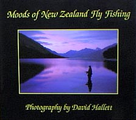

本棚から
ニュージーランドで読んだ釣り関連の洋書 Moods of New Zealand Fly Fishing
David Hallet 撮影 David Hallett 刊
ISBN 0-473-04622-9
以前から書店で見かけていたのでその存在を知ってはいましたが、高額なため、ついに買うことのできなかった（笑）この本を、釣友の川本君が結婚したので、彼へのお祝いとして買いました。以下、本の内容をご説明する代わりに、彼へ送った手紙をご紹介します。

川本君へ
ご結婚、本当におめでとうございます。
本を探すのに手間取って、いささか遅れましたが、ようやく
Moods of New Zealand Fly Fishing
をお届けします。
ぱっと見たときからいい写真集だなぁと思っていたのですが、ようやく手に入れました。
奥さんに見せて、ニュージーランド再訪の説得材料にして下さい。（笑）
蛇足ではありますが、各写真に思いつくまま、コメントしてみます。酒の肴にして下さい。写真の地名と、地図を見比べながら飲むのも良いでしょう。
P12-13
98年のニュージーランド釣行の際に、バスを降りてブリントさんが迎えに来てくれていたのが Moana の町で、そこにある湖がこれです。
西海岸では有数の大きさで、鱒釣りのさかんな所です。
P20
このぐらいの規模の川で、デカイヤツを釣ってみたいよね。
P24
この湖は、ダム湖でして、岸辺からブラウンを狙えるそうです。この夏に行ってみようと思っています。なにげなく撮っている写真のようですが、なかなかこれという一枚を撮るのは難しい。川本君も写真にこだわるのでよく知っていると思うけど。
P29
背景の山はおそらく北島西部にあるタラナキ山だと思います。休火山で、富士山によく似ています。
P34
こういう川が、かなり難しかったりして....
P35
人工の運河です。おそらくは南島。ちょっと別の惑星のようですね。
P44
最近、ニュージーランドでもヘリによる奥地の川へのアクセスを制限しようとか、旅行者向けのライセンス料金増額をしようとかいう議論が出ています。あの、ニュージーランドでさえ、というか、それゆえに、楽園は壊れやすいもののようです。
P52
典型的な、岸沿いのポイント。岸から２ｍ以内。（笑）
P54
ゴムボートのラフティングも一度やってみたいものです。
P55
これをランディングできたらいつ死んでもいいっ！ と思わせるレインボー（笑）
P57
ヒジョーに難しいシチュエーションですね。
P63
こーゆー川は、鉄砲水がコワイ....
P65
広角レンズを上手に使ってますね。特殊効果撮影みたい。
P72、81
ハミルトン近郊のスプリングクリークは、こんな感じの川が多いです。
いわゆる石の並んだ河原が無いのと、岸辺の藻、水草、雑草が絡まってうっとおしいことこの上無いです。
P76
このくらいの距離ならオレでも...と思いますが、バックキャストを写されたらメロメロだろうなぁ...（笑）
P84
シビアな条件に、ティペットは細くしたいけど、藻に絡まったらすぐ切られる.....あぁ、頭が痛い。
P85
これが見たさに、釣りをする....
P86
モデルさんの視線が茂みに入っている....。こりゃ水面を見ないとアカンのではないかな。（笑）
P88
ここは、大物虹鱒で有名です。
P100
ブリントさんとさまよった川を思い出しますね。
P102、103
ウェストランド、ブルナー湖、あるいは私らが釣った川あたりの水の色は、こんな深い茶褐色でした。
P105
この写真が見たくて買いました。（笑） これもけっこう広角で撮ってるなぁ。
P108
この川は、比較的近いのでこの夏に行ってみます。
P113
高巻きの際に、まめに竿をたたんでいるところがエライ！
ニュージーランドを訪れることがあれば、書店でぜひ一度ご覧いただきたい素晴らしい写真集です。
イギリスのアマゾンで調べたら、https://www.amazon.co.uk/ 今でも新品・古本を売っているようですね。値段は￡32.67でした。アメリカのアマゾンでも、https://www.amazon.com/ 売っていまして、こちらは$14.99からありました。
本棚から 目次へ
サイトマップ
ホームへ
お問い合わせ